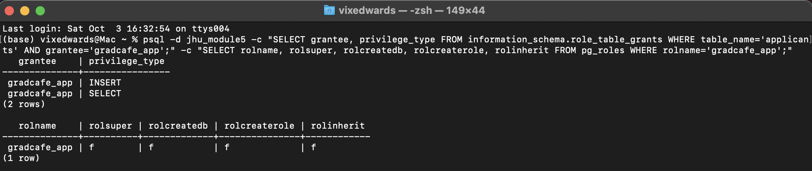
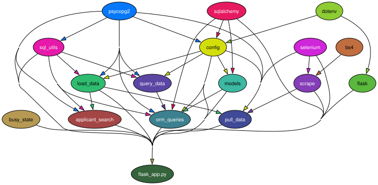
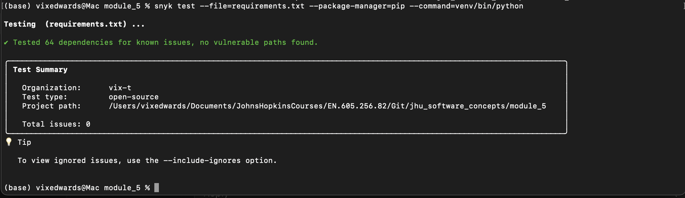
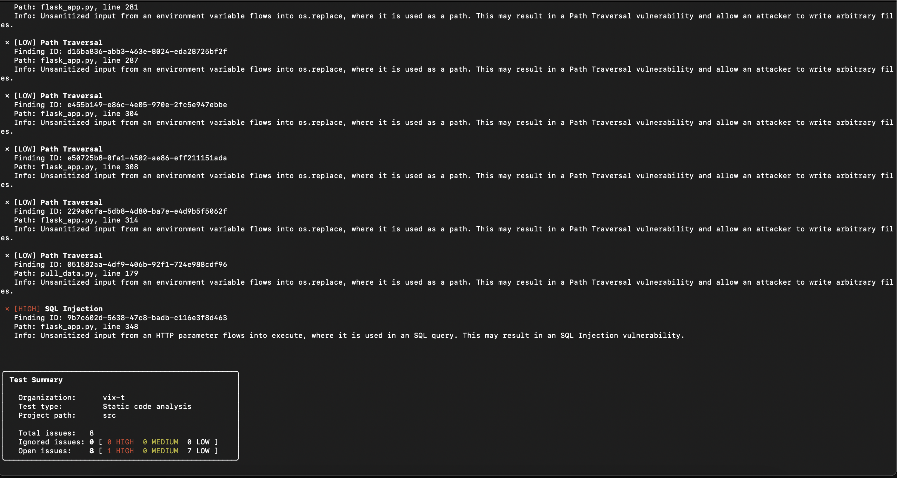
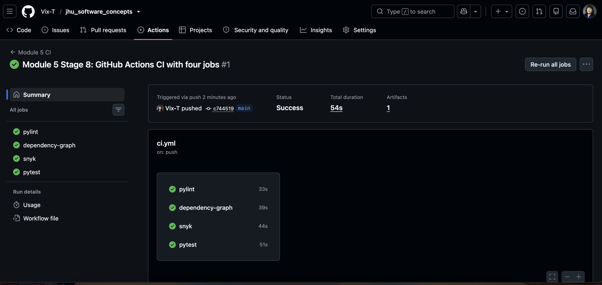

Module 5 takes the Module 4 Flask and PostgreSQL app (the Grad Café applicant analysis with Pull Data and Update Analysis) and hardens it: SQL composed safely with enforced limits, configuration from environment variables, a least-privilege database role, Pylint 10.00/10 with specific exception handling, reproducible packaging, a dependency graph, Snyk scans, and a four-job CI pipeline. All 307 tests pass at 100% statement coverage.
Prerequisites are Python 3.12, PostgreSQL and Graphviz. From a fresh clone:
git clone https://github.com/Vix-T/jhu_software_concepts.git
cd jhu_software_concepts/module_5
createdb jhu_module5 && createdb jhu_module5_test
cp .env.example .envThen fill in the DB_* settings and TEST_DATABASE_URL in .env.
Option A: pip and venv
python3.12 -m venv venv
source venv/bin/activate
python -m pip install -r requirements.txt
python -m pip install -e .Option B: uv
uv venv --python 3.12
source .venv/bin/activate
uv pip sync requirements.txt
uv pip install -e .Then load the data and run the app (http://127.0.0.1:5000/), the tests (from the repository root) and Pylint:
python src/load_data.py
python src/flask_app.py
python -m pytest -c module_5/pytest.ini -m "web or buttons or analysis or db or integration" module_5/tests
python -m pylint srcrequirements.in lists the top-level packages; requirements.txt is the fully pinned lock
compiled from it with uv pip compile --universal, so pip, uv and CI install identical versions. With
uv, a conda environment must not be active (or .venv must be activated first), because uv would
otherwise target $CONDA_PREFIX and uv pip sync would prune it.
setup.py matterssetup.py declares the project (gradcafe-analytics 5.0.0), its modules under
src/ (package_dir={"": "src"}), its Python requirement and its runtime dependencies. That
gives every context the same import behavior: the app, the test suite and CI all import config,
load_data and the other modules by the same bare names, instead of each relying on its own
sys.path adjustment. An editable install (pip install -e .) puts src/ on the
path once, so edits take effect immediately without reinstalling. Standard tools understand it too: uv reads
setup.py the same way pip does, so uv pip install -e . works without extra configuration.
The project is editable-only by design. The code finds its templates/,
static/, .env and data/ relative to src/. A regular install would
copy only the .py files into site-packages, and those paths would break, so the README documents
the editable install as the supported one. install_requires lists only the six runtime packages with
lower bounds; the exact, fully pinned environment (including test, lint and docs tools) is
requirements.txt.
Pylint runs from module_5/ with python -m pylint src and scores
10.00/10 (pylint_report.txt). No check is disabled: there are no
# pylint: disable comments and no loosened configuration. Every warning was fixed in the code.
The instructor's rule is to catch only the exceptions the code can actually handle. It was applied throughout:
except: and no except Exception.
Each handler names its exceptions, grouped in named tuples such as
DB_UNAVAILABLE_ERRORS = (psycopg2.OperationalError, sqlalchemy.exc.OperationalError),
LAUNCH_FAILURES = (OSError, subprocess.SubprocessError), and the Pull Data
RECORDED_FAILURES (retries exhausted, missing table, psycopg2.Error, file and socket
errors, configuration errors).pass or swallows the error silently.applicants table,
or a permission error (SQLSTATE 42501) becomes a 503 with a specific message (for example "applicants table
missing; run load_data.py as the database owner"). Validation errors become 400s.finally for cleanup. The Pull Data busy lock is released in a
finally block when the launch did not happen, and the file-lock guard in
busy_state.py always unlocks in finally. Database connections are closed the same way.
Cleanup therefore never depends on catching an exception.FLASK_DEBUG=1, so error responses never expose tracebacks or a remote console.Before Module 5, Q8 and Q9 built their WHERE clause with an f-string. The interpolated text was
only a join of constant placeholders, so it was not exploitable, but it put Python string formatting inside SQL,
which the assignment forbids. Every statement is now a psycopg2.sql composed object.
Before (query_data.py, Module 4)
university_clause = " OR ".join(
"program ~* %s" for _ in Q8_Q9_UNIVERSITIES
)
cur.execute(
f"""
SELECT COUNT(*) FROM applicants
WHERE term = 'Fall 2026'
AND status = 'Accepted'
AND degree = 'PhD'
AND program ~* %s
AND ({university_clause})
""",
[CS_PATTERN] + params,
)After (query_data.q8_q9_query)
university_clause = sql.SQL(" OR ").join(
sql.SQL("{} ~* %s").format(
sql.Identifier(university_column))
for _ in Q8_Q9_UNIVERSITIES
)
stmt = sql.SQL("""
SELECT COUNT(*) FROM {table}
WHERE term = %s AND status = %s
AND degree = %s AND {program} ~* %s
AND ({universities})
LIMIT %s
""").format(table=APPLICANTS,
program=sql.Identifier(program_column),
universities=university_clause)*_query() function only returns
(stmt, params); the q*() functions only execute what the builder returns. The tests can
therefore inspect every statement's SQL text without touching a cursor.sql_utils.APPLICANTS) and every column chosen at
runtime are sql.Identifier, so PostgreSQL always sees them as quoted names. Fixed columns
(term = %s) are literal SQL inside constant statements, never assembled from input.%s parameters, never part of the SQL text. Literals such as 'Fall 2026' moved
out of the SQL into the parameter list.str.format. sql.SQL(...).format(...) is psycopg2's composition
API: it accepts only Composable objects (Identifier, SQL,
Placeholder) and quotes each correctly. Passing a plain string raises
TypeError: Composed elements must be Composable, so raw text cannot be spliced in by accident./api/applicants endpointThis is the one place user input chooses SQL structure, so every parameter is validated before any SQL
exists. sort must be a key of SORT_COLUMNS, and only the fixed column name it maps to
becomes an Identifier. order must be asc or desc, mapped to fixed
sql.SQL("ASC")/("DESC"). limit goes through clamp_limit().
university (at most 100 characters) is a bound ILIKE ... ESCAPE parameter, with
\, % and _ escaped so a lone % cannot match everything. Anything
else is a 400. The query runs on a read-only connection and never returns the free-text
comments column.
| Malicious input (tests/test_api_applicants.py) | Result |
|---|---|
limit=10; DROP TABLE applicants, limit=1 OR 1=1 | 400, no SQL built |
sort=date_added; DROP TABLE applicants, sort=url--, sort=1 | 400 (not in the allowlist) |
order=asc; DROP TABLE applicants | 400 |
university=' OR '1'='1, x'; DROP TABLE applicants; --, %' ; TRUNCATE applicants; -- | 200 with no matching rows; matched literally as text |
| After all nine requests | The table still exists, with the same row count |
A builder test also renders the statement for hostile university values and asserts that none of
the user's text (DROP, DELETE, '1'='1) appears in the SQL, only in the
parameters. As a sabotage check, replacing one placeholder with string concatenation made 9 tests
fail, so the suite does catch an injection regression. The analysis output before and after the SQL
rewrite was byte-identical.
sql_utils.clamp_limit() is the single place limits are decided. None means the default
of 10, and every value is clamped to 1–100 (0 → 1, 500 → 100). It accepts an
int or a string of decimal digits with an optional leading -. Booleans, floats and any
other text, including surrounding whitespace and 10; DROP TABLE applicants, raise
ValidationError, which the API turns into a 400. Every LIMIT value is a bound parameter that has passed
through it:
COUNT, AVG, SUM) end in
LIMIT %s with clamp_limit(SINGLE_ROW) = 1, including the
to_regclass table check.existing_urls looks up candidate URLs in batches of at
most 100 (WHERE url = ANY(%s) LIMIT %s, with the limit equal to the batch size, since
url is unique). It never selects the whole table..limit(clamp_limit(...)): 1 for aggregates, and the
clamped value for row listings.sql_utils docstring, covers every
SELECT. Statements that return no rows cannot take a LIMIT: CREATE TABLE, the per-row
INSERT, and the transaction-control SAVEPOINT, ROLLBACK TO SAVEPOINT and
RELEASE SAVEPOINT statements (commented as such in load_data.py).Two roles separate ownership from day-to-day use. The owner (my PostgreSQL user) owns
jhu_module5 and the applicants table, and runs load_data.py and
setup_roles.py. The app role, gradcafe_app, is what the Flask app and Pull
Data connect as. setup_roles.py creates or updates it idempotently and prints what it ran, with the
password masked. Below is the actual output of setup_roles.py, run as the owner against
jhu_module5:
Role setup for gradcafe_app on database jhu_module5, run as vixedwards:
CREATE ROLE "gradcafe_app" WITH LOGIN NOSUPERUSER NOCREATEDB NOCREATEROLE NOREPLICATION NOBYPASSRLS NOINHERIT PASSWORD '********';
REVOKE ALL ON DATABASE "jhu_module5" FROM PUBLIC;
REVOKE ALL ON DATABASE "jhu_module5" FROM "gradcafe_app";
GRANT CONNECT ON DATABASE "jhu_module5" TO "gradcafe_app";
REVOKE ALL ON SCHEMA "public" FROM "gradcafe_app";
GRANT USAGE ON SCHEMA "public" TO "gradcafe_app";
REVOKE ALL ON TABLE "applicants" FROM "gradcafe_app";
GRANT SELECT, INSERT ON TABLE "applicants" TO "gradcafe_app";
REVOKE ALL ON SEQUENCE "public"."applicants_p_id_seq" FROM "gradcafe_app";
GRANT USAGE ON SEQUENCE "public"."applicants_p_id_seq" TO "gradcafe_app";| Privilege | Why |
|---|---|
SELECT on applicants | The analysis page, Update Analysis and /api/applicants read rows. |
INSERT on applicants | Pull Data adds newly scraped rows. |
USAGE on the p_id sequence | p_id is SERIAL, so each insert calls nextval(). |
CONNECT on the database, USAGE on public | The minimum needed to reach the table. No TEMPORARY and no CREATE. |
Database access revoked from PUBLIC | Other roles on the server can't connect by default. |
| Nothing else | No UPDATE, DELETE, TRUNCATE or DDL. Not a superuser and can't create databases or roles. The app never needs these, so a compromised app can't destroy data. |

gradcafe_app holds only INSERT and SELECT on
applicants, and has no superuser, create-database, create-role or inherit attributes.Because the app role can't create the table, the app checks for it with
SELECT to_regclass('applicants') LIMIT 1 instead of attempting CREATE TABLE. If the table
is missing, it answers 503 "applicants table missing; run load_data.py as the database owner". The tests verify the
role's exact privileges, confirm that UPDATE/DELETE/CREATE fail with
"permission denied", and run the app end to end as the role.
Credentials never appear in code. config.py reads DB_HOST, DB_PORT,
DB_NAME, DB_USER and DB_PASSWORD (and APP_DB_USER/APP_DB_PASSWORD
for setup_roles.py) from the environment, falling back to module_5/.env. The
.env file is gitignored; .env.example is the committed template with placeholders. The
owner-only scripts take an inline override (DB_USER=owner DB_PASSWORD= python src/setup_roles.py). One
caveat: locally, Postgres.app uses trust authentication, so the app role's password isn't checked, but its
privileges are still enforced.

dependency.svg, generated by
pydeps src/flask_app.py --noshow -T svg -o dependency.svg --max-module-depth 1 --rankdir TB --only ….
Arrows point from a dependency to the module that imports it.flask_app.py is the entry point and imports almost every other module. It serves the analysis
page, the Pull Data and Update Analysis routes, and /api/applicants through Flask.
pull_data runs the scrape-and-load pipeline: scrape uses Selenium to
attach to an already-running Chrome session through Chrome's remote-debugging port, a session I
started and cleared through Grad Café's Cloudflare check by hand (it is not headless and does not launch a browser).
BeautifulSoup (bs4) parses the result pages, and load_data inserts the cleaned rows into
PostgreSQL through psycopg2. config is the single source of database settings: it reads the
DB_* variables, with python-dotenv loading them from .env, and builds both the psycopg2
connection string and the SQLAlchemy URL. sql_utils holds the shared safe-SQL pieces (the table
identifier, LIMIT clamping, validation errors) used by load_data, query_data,
applicant_search and orm_queries. The analysis has two implementations,
query_data with raw psycopg2 SQL and orm_queries with SQLAlchemy over the
models mapping, and busy_state is a standalone file lock that keeps a pull and an update
from running at the same time. setup_roles.py is absent because it is a standalone command-line
script that the app never imports.
The dependency scan, run from module_5/ with
snyk test --file=requirements.txt --package-manager=pip --command=venv/bin/python, tested
64 dependencies and found 0 issues, with nothing ignored. The Stage 4 pins already avoided every
known vulnerability, so no upgrades were needed.

Marker workaround. The universal lock contains two Windows-only entries,
cffi==2.1.1 and pycparser==3.0 (pulled in by trio, via Selenium, on Windows), with
os_name == 'nt' environment markers. Snyk's pip resolver ignores those markers and stops with "Missing
required packages", and --skip-unresolved does not help. Installing the two locked versions into the
venv (uv pip install cffi==2.1.1 pycparser==3.0 --python venv/bin/python) lets the scan run and covers
them as well. The README documents this, and CI does the same.
snyk code test src and snyk code test tests report 11 findings in the project's own
code. I reviewed each one. All are false positives, and they are left open as documented exceptions
(SNYK_FINDINGS.md) rather than ignored or worked around with code changes that would only satisfy the
scanner.

snyk code test src: the last findings and the summary (8 open: 1 high, 7 low; 0 ignored). The 3 test-file findings come from snyk code test tests (snyk_code_output.txt).| Rule | Location | Severity | Why it is a false positive |
|---|---|---|---|
| SQL Injection | flask_app.py:348 | High | Snyk traces the query parameters into execute(), but no input becomes SQL text: sort and order are looked up in allowlists that map to fixed SQL, limit and university are bound parameters, and anything else is a 400 before a query is built. Snyk doesn't treat the allowlist lookup as a sanitizer. |
| Path Traversal (×7) | flask_app.py:226, 281, 287, 304, 308, 314; pull_data.py:179 | Low | Every trace starts at the PULL_RESULT_FILE environment variable and ends at os.replace() when the pull result file is written. Only whoever starts the server (or the app, for its own child process) sets that variable; no HTTP request can reach it, and anyone who can set it can already run code as the app. |
| Hardcoded Passwords (×3) | tests/test_config.py:18, 60, 134 | Low | Made-up values in unit tests of the configuration parser. They never authenticate to anything; Snyk's own rule ID marks them as test findings. |
.github/workflows/ci.yml runs on every push and pull request to main (and on demand).
It has four independent jobs, each on Ubuntu 24.04 with Python 3.12, a pip cache, and
module_5/requirements.txt:
| Job | What it enforces |
|---|---|
pylint | python -m pylint src --fail-under=10. It first checks that the workflow's mirrored copy is identical. |
dependency-graph | Installs Graphviz from apt, runs the README's pydeps command, fails unless dependency.svg exists and contains graph nodes, and uploads it as an artifact. |
snyk | Installs a pinned Snyk CLI (1.1307.4, SHA-256 verified) and the marker workaround, then runs snyk test --severity-threshold=high, which fails the job on any high or critical issue. snyk code test src runs as a report only, because of the documented false positives. |
pytest | The full suite against a PostgreSQL 16 service container (trust auth, health-checked), with 100% coverage enforced by pytest.ini. |
The Snyk job authenticates with the SNYK_TOKEN repository secret, which is never printed; if the
secret is missing, the job stops with a clear error. GitHub only runs workflows from the repository root, so
that copy is the one that executes. module_5/.github/workflows/ci.yml is an identical copy for the
expected module layout, and the pylint job fails if the two differ.
